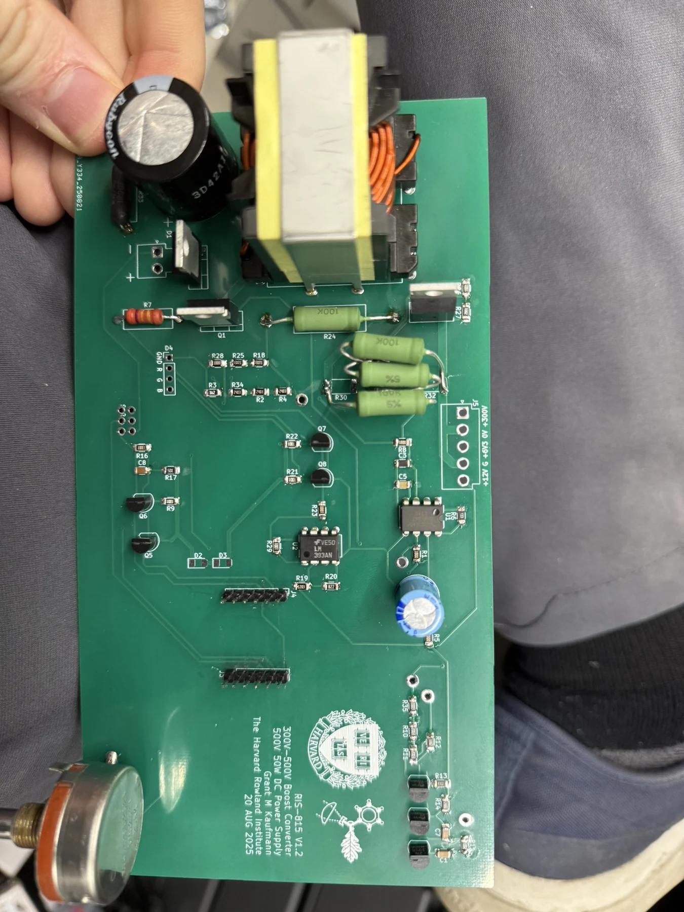

Budget e-bike conversion kit
Custom motor control, a printed hub motor, and a simple goal: make electric transportation more accessible.
A high-voltage power-supply project for vacuum-tube work.

Full build documentation is on the way.
The photographs below document the board and its assembly. A detailed account of the circuit design, testing, and results is being prepared.
Select any photo to open the full-size gallery.
Custom motor control, a printed hub motor, and a simple goal: make electric transportation more accessible.